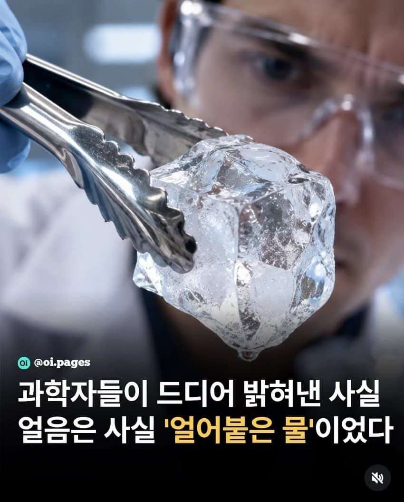

60 · 42 · 5 시간 전 · 원문

수집 당시 댓글 42개
어뎁터 · 7 시간 전
wenjsvnkl · 7 시간 전
? 그럼 물을 냉동실에 넣어서 얼리면 얼음이 뿅하고 나타난단 소리임? 뭔 말도안되는..
밑장빼기 · 7 시간 전
어떻게 딱 32도에서 얼고 212도에서 끓지?
↳ 답글 · 익명
그냥 우연이지신이만들었다면 0도에서얼고 255도에서 끓었을것.
↳ 답글 · ArmCut · 6 시간 전
뭐? 어떻게 딱 8비트로 표현할수 있는 수의 범위인거지???
↳ 답글 · 내아이디어디갔지 · 5 시간 전
사람이 만들어서 100도에 끓는구나!
Doro · 7 시간 전
이럴줄알았다
차가운밤 · 7 시간 전
그랬구나
불혹아재 · 7 시간 전
morry · 6 시간 전
뭐... 라고...
Haigha · 6 시간 전
얼음이 물위에 둥둥 뜨는데 어떻게 물의 고체가 얼음이라는 거임 ㄱ-
오레오 오 · 6 시간 전
빅광대 · 6 시간 전
어쩐지 이상하더라 겨울만 되면 바깥에 물이 전부 사라지지 뭐야
읎어 · 6 시간 전
구라치지마라 ㅋㅋㅋ 물이 변신이라도 한단 말이냐
↳ 답글 · 몽쉘통통의고양이 · 5 시간 전
ㅋㅋㅋㅋㅋ 잘하면 수증기도 물이라고 하겠다?
긴장성두통 · 6 시간 전
그럼 인간의70%는 녹아내린 얼음이었다고..?
↳ 답글 · 린미 · 3 시간 전
그럼 나머지 30%의 인간은 얼음이야?
lIlIlIlIlIlI · 6 시간 전
물이 얼면 기름도 얼겠네? ㅋㅋㅋ 말이되는 소리를 해야
아라홍련 · 6 시간 전
그냥 뭉친 물 이라는걸 말하고싶었단거야 뭐야 ㅋㅋㅋㅋㅋㅋㅋ
↳ 답글 · 시간루팡중 · 5 시간 전
어.. 물도 압력으로 얼릴 수 있나..?
↳ 답글 · 여긴머하는곳 · 5 시간 전
상온에서 1만기압넘게주면 고체(얼음) 된다네
그럼.. 그 기압으로 고체(얼음)된 물은 존나뜨거운가?..
https://www.yna.co.kr/amp/view/AKR20190530027100063 그런이야기는 없긴한데 궁금하네
본문은 우리가 알고 있는 고체화된 물(얼음)은 사실은 그저 냉각된 물(액체)인거고 뭐.. 이런 얘기 아닌가 싶어져서 ㅋㅋ..지피티한테 물어보니까 관련 연구자료가 있고, 압력으로 고체화한 물은 미지근한 온도라네https://www.kriss.re.kr/gallery.es?mid=a10505000000&bid=0018&list_no=6361&act=view
압력에 의해 형태가 변한 물질은 온도가 변해도 그 상태를 유지함부탄가스통이나 가스라이터가 차갑거나 뜨겁지 않잖아?
↳ 답글 · 시간루팡중 · 3 시간 전
연구결과에서 물은 압력이 풀리면 기화되거나 다시 액화된다는데?! 내가 궁금한건 얼음이 뜨거운게 잘 그게 안되니까 ㅋㅋ..
결혼전도사 · 6 시간 전
멍청한 과학자놈들!
에궁님 · 6 시간 전
오늘도야근이다 · 5 시간 전
그렇구나 여태 저 사실을 몰랐네 .. 역시 많이 배운 과학자들이구나 ...
차삼 · 5 시간 전
헉... 사람 몸에 물이 많은걸 보니 사실 사람도 물가에서 나온게 아닐까?
팬티살돈이없어서그랬어요 · 5 시간 전
사람의 7할은 녹은 얼음이다
모닝프로틴 · 5 시간 전
sax · 5 시간 전
수학자들 1+1=2 이런거 검증하고 그러지않나?
Epoch · 5 시간 전
IlIIIllIl · 5 시간 전
사이클롭스 · 5 시간 전
전생했더니이름이엄준식이었던건에대하여 · 5 시간 전
폰은정 · 5 시간 전
기원전에도 알았음
정몽구 · 5 시간 전
이게 다 하나님께서 만든 기적의 미라클임하나님이 만든게 아니라면 어떻게 정확히 100도씨에서 물이 끓냐 이거야!!지저스 크라이스트 섹스!!
아이언호크 · 5 시간 전
얼음 결정 경로 20가지가 밝혀져있었는는데 새로운 21번쩨 경로를 찾았다 는 내용
Qqqqqq · 5 시간 전
오 지저스
지리산반달곰노동조합 · 1 시간 전
댓글
수집 당시 댓글 42개
어뎁터 · 7 시간 전
wenjsvnkl · 7 시간 전
? 그럼 물을 냉동실에 넣어서 얼리면 얼음이 뿅하고 나타난단 소리임? 뭔 말도안되는..
밑장빼기 · 7 시간 전
어떻게 딱 32도에서 얼고 212도에서 끓지?
· 익명
그냥 우연이지
신이만들었다면 0도에서얼고 255도에서 끓었을것.
· ArmCut · 6 시간 전
뭐? 어떻게 딱 8비트로 표현할수 있는 수의 범위인거지???
· 내아이디어디갔지 · 5 시간 전
사람이 만들어서 100도에 끓는구나!
Doro · 7 시간 전
이럴줄알았다
차가운밤 · 7 시간 전
그랬구나
불혹아재 · 7 시간 전
morry · 6 시간 전
뭐... 라고...
Haigha · 6 시간 전
얼음이 물위에 둥둥 뜨는데 어떻게 물의 고체가 얼음이라는 거임 ㄱ-
오레오 오 · 6 시간 전
빅광대 · 6 시간 전
어쩐지 이상하더라 겨울만 되면 바깥에 물이 전부 사라지지 뭐야
읎어 · 6 시간 전
구라치지마라 ㅋㅋㅋ 물이 변신이라도 한단 말이냐
· 몽쉘통통의고양이 · 5 시간 전
ㅋㅋㅋㅋㅋ 잘하면 수증기도 물이라고 하겠다?
긴장성두통 · 6 시간 전
그럼 인간의70%는 녹아내린 얼음이었다고..?
· 린미 · 3 시간 전
그럼 나머지 30%의 인간은 얼음이야?
lIlIlIlIlIlI · 6 시간 전
물이 얼면 기름도 얼겠네? ㅋㅋㅋ 말이되는 소리를 해야
아라홍련 · 6 시간 전
그냥 뭉친 물 이라는걸 말하고싶었단거야 뭐야 ㅋㅋㅋㅋㅋㅋㅋ
· 시간루팡중 · 5 시간 전
어.. 물도 압력으로 얼릴 수 있나..?
· 여긴머하는곳 · 5 시간 전
상온에서 1만기압넘게주면 고체(얼음) 된다네
· 시간루팡중 · 5 시간 전
그럼.. 그 기압으로 고체(얼음)된 물은 존나뜨거운가?..
· 여긴머하는곳 · 5 시간 전
https://www.yna.co.kr/amp/view/AKR20190530027100063 그런이야기는 없긴한데 궁금하네
· 시간루팡중 · 5 시간 전
본문은 우리가 알고 있는 고체화된 물(얼음)은 사실은 그저 냉각된 물(액체)인거고 뭐.. 이런 얘기 아닌가 싶어져서 ㅋㅋ..
지피티한테 물어보니까 관련 연구자료가 있고, 압력으로 고체화한 물은 미지근한 온도라네
https://www.kriss.re.kr/gallery.es?mid=a10505000000&bid=0018&list_no=6361&act=view
· 린미 · 3 시간 전
압력에 의해 형태가 변한 물질은 온도가 변해도 그 상태를 유지함
부탄가스통이나 가스라이터가 차갑거나 뜨겁지 않잖아?
· 시간루팡중 · 3 시간 전
연구결과에서 물은 압력이 풀리면 기화되거나 다시 액화된다는데?! 내가 궁금한건 얼음이 뜨거운게 잘 그게 안되니까 ㅋㅋ..
결혼전도사 · 6 시간 전
멍청한 과학자놈들!
에궁님 · 6 시간 전
오늘도야근이다 · 5 시간 전
그렇구나 여태 저 사실을 몰랐네 .. 역시 많이 배운 과학자들이구나 ...
차삼 · 5 시간 전
헉... 사람 몸에 물이 많은걸 보니 사실 사람도 물가에서 나온게 아닐까?
팬티살돈이없어서그랬어요 · 5 시간 전
사람의 7할은 녹은 얼음이다
모닝프로틴 · 5 시간 전
sax · 5 시간 전
수학자들 1+1=2 이런거 검증하고 그러지않나?
Epoch · 5 시간 전
IlIIIllIl · 5 시간 전
사이클롭스 · 5 시간 전
전생했더니이름이엄준식이었던건에대하여 · 5 시간 전
폰은정 · 5 시간 전
기원전에도 알았음
정몽구 · 5 시간 전
이게 다 하나님께서 만든 기적의 미라클임
하나님이 만든게 아니라면 어떻게 정확히 100도씨에서 물이 끓냐 이거야!!
지저스 크라이스트 섹스!!
아이언호크 · 5 시간 전
얼음 결정 경로 20가지가 밝혀져있었는는데 새로운 21번쩨 경로를 찾았다 는 내용
Qqqqqq · 5 시간 전
오 지저스
지리산반달곰노동조합 · 1 시간 전